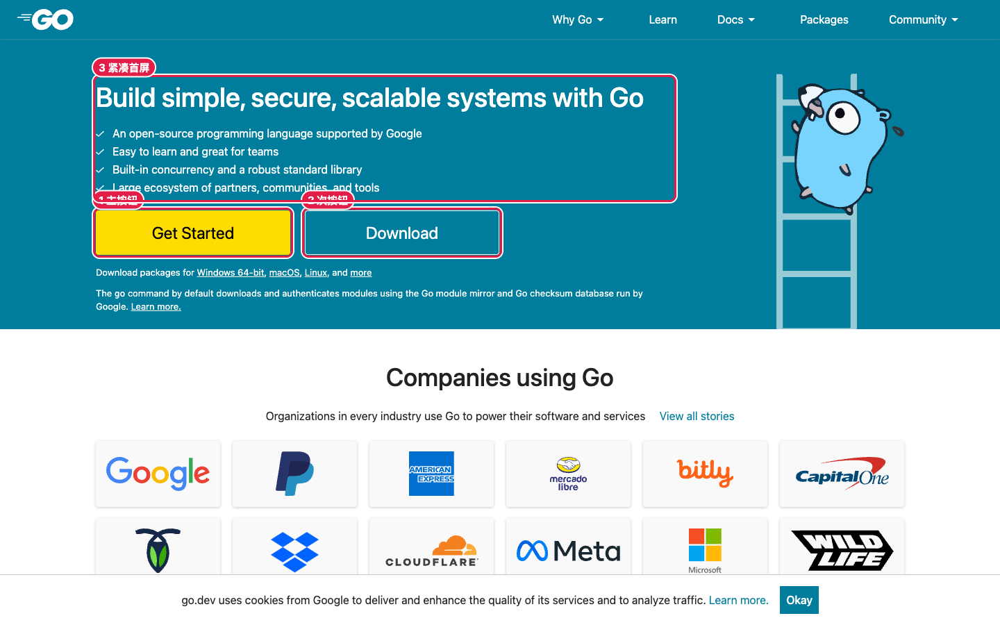
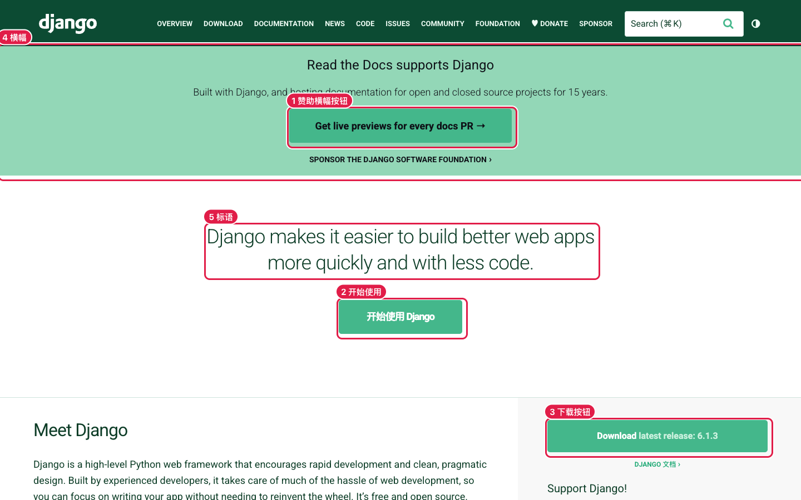
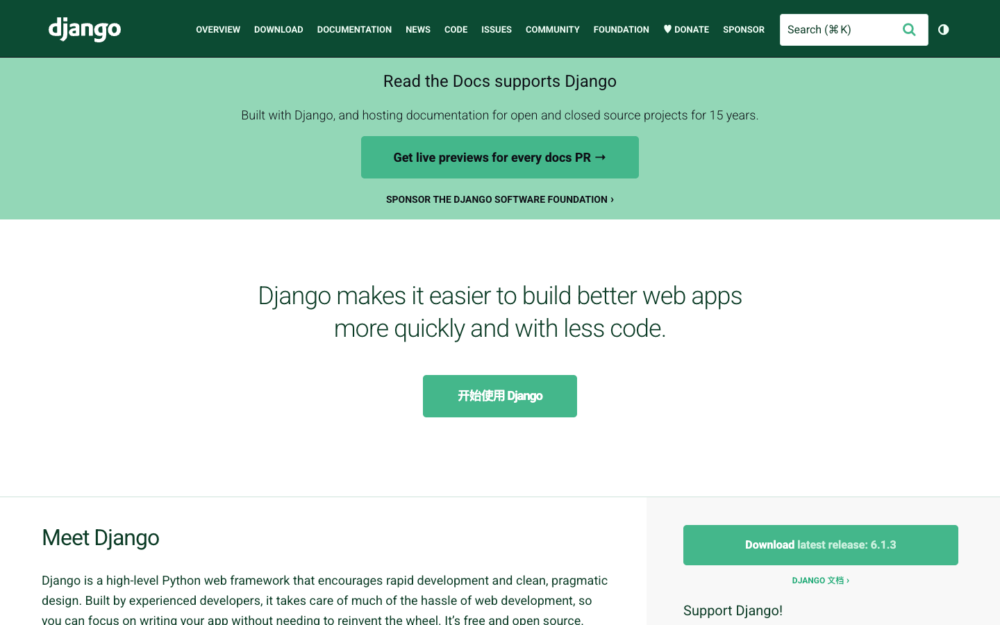
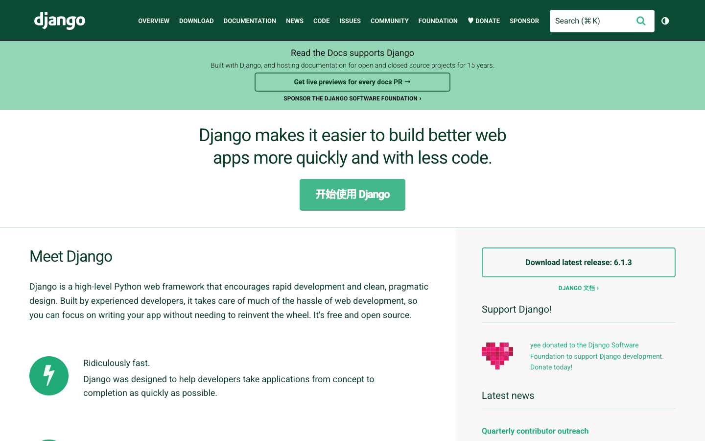

djangoproject.com 首页 · 参考 go.dev 的改版指令卡
页面目标：第一次来的人知道 Django 是什么，并点「开始使用」（不是点赞助横幅，也不是先下载）。


一、想借鉴的 → 对应我页面的哪里
| 编号 | 类型 | 参考图里的位置 | 好在哪 | 对应我页面的区域 |
|---|---|---|---|---|
| B1 | 按钮样式 | 首屏 Get Started（黄色实心 64px 高、24px 字）+ Download（白色描边，同尺寸） | 一个实心 + 一个描边，一眼分出主次；首屏只有一个“最亮”的块 | 首屏同时有 3 个同色（#44b78b）实心按钮：赞助横幅按钮、开始使用 Django、右侧 Download，没有主次#banner-cta ； .copy-banner a.cta ； [role=complementary] > a.cta |
| B2 | 留白 | H1 离导航只有 56px，标题、4 条要点、2 个按钮在 474px 内（横幅区）全部出现 | 首屏紧凑，一屏内看完“是什么 + 怎么开始” | 赞助横幅（高约 234px）占掉首屏顶部，标语（em）顶部约在 405px 才出现；标语所在的开始使用区块高约 400px（316～716px）#billboard ； .copy-banner |
| B3 | 标题层级 | H1 39px、字重 500，左对齐，下面接 18px 要点 | 标题有重量，不是细线体；与下一级字号有明显差距 | 标语 em（36px、字重 300 的细线体），页面里没有比它更重的东西.copy-banner em |
二、这些地方不动
- Django 的绿色主色：品牌色，不借 go.dev 的黄色；只借“一实一空”的主次关系
- 顶部导航（OVERVIEW / DOWNLOAD / DOCUMENTATION …）：导航已经完整，且与目标无冲突，不动
- “Meet Django”介绍区、Join the Community 区：内容充足，问题不在这里
- 赞助横幅本身（文字与链接）：这是基金会的收入来源，不删，只降低它的视觉权重和占高
- go.dev 首屏右侧的大吉祥物插图：Django 没有对应素材
- go.dev 的“Companies using Go”标志墙：Django 页面目标不是证明规模
三、改版清单（按优先级）
P0P0-1 赞助横幅按钮降级成描边次按钮✅ 实测已达标
- 改哪里
- #banner-cta（Get live previews for every docs PR →）
- 怎么改
- 去掉实心绿底，改透明底 + 2px 深绿描边 + 深色字。它不是这个页面的目标，不该和“开始使用”同色同重。
#billboard #banner-cta { background:transparent; border:2px solid #2b6e57; color:#0c3c26; } - 怎么看改对了
- 首屏第一眼只剩“开始使用 Django”一个实心块；量：该按钮背景透明、边框 ≥ 2px
- 借鉴点
- B1
P0P0-2 右侧 Download 也降成描边✅ 实测已达标
- 改哪里
- [role=complementary] > a.cta（Download latest release: 6.1.3）
- 怎么改
- 透明底 + 2px 绿描边（沿用品牌绿 #44b78b）。下载仍然看得见，只是排在“开始使用”之后（go.dev 也是 Get Started 实心、Download 描边）。 按钮里“latest release: 6.1.3”那段 em 原来是白字，描边后要一起改成深色（color:inherit），否则白底白字看不见。
[role=complementary] > a.cta { background:transparent; border:2px solid #44b78b; color:#0c4b33; } [role=complementary] > a.cta em { color:inherit; } - 怎么看改对了
- 右侧下载按钮不再是实心；量：背景透明、描边 ≥ 2px
- 借鉴点
- B1
P1P1-1 赞助横幅压成一行高，标语提前进第一屏✅ 实测已达标
- 改哪里
- #billboard .banner
- 怎么改
- 标题、说明、按钮在桌面宽度改成一行横排（flex 居中换行），内边距 12px，字号整体缩小（标题 18px、说明 14px、按钮 14px）。横幅总高从约 234px 压到 ≤ 150px，标语 em 的顶部从约 405px 提前到 ≤ 320px。
#billboard .banner { display:flex; flex-wrap:wrap; align-items:center; justify-content:center; gap:4px 20px; padding:12px 16px; } #billboard .banner h2 { font-size:18px; margin:0; } #billboard .banner .banner-body { margin:0; font-size:14px; } #billboard .banner #banner-cta { margin:0; padding:8px 16px; font-size:14px; } #billboard .banner .link-readmore { margin:0; font-size:12px; } - 怎么看改对了
- 1440 宽下不滚动，标语和“开始使用”按钮都在屏内；量：#billboard 高 ≤ 150px，标语顶 ≤ 320px
- 借鉴点
- B2
P1P1-2 标语加重、主按钮放大✅ 实测已达标
- 改哪里
- .copy-banner p em（标语）、.copy-banner p a.cta（开始使用 Django）
- 怎么改
- 标语字重从 300 提到 500（go.dev H1 是 500）；主按钮字号 18 → 22px，内边距加到上下 18px，使按钮高 ≥ 64px（go.dev 主按钮 64px）。 注意站点原规则是 `.copy-banner p a.cta`，优先级比 `.copy-banner a.cta` 高，所以自己的规则要写成 `#homepage .copy-banner p a.cta` 才压得过。
#homepage .copy-banner p em { font-weight:500; } #homepage .copy-banner p a.cta { font-size:22px; padding:18px 32px; margin:0; } - 怎么看改对了
- 标语不再是细线体；量：标语字重 ≥ 500，主按钮高 ≥ 64px、字号 ≥ 22px
- 借鉴点
- B3
P2P2-1 开始使用区上下收紧✅ 实测已达标
- 改哪里
- .copy-banner
- 怎么改
- 区块上下内边距 50px → 16px，两段文字的外边距 36px → 12px，让下面的“Meet Django”早点露头；区块高 ≤ 320px。 段落左右外边距 310px 是原样式用来居中的，只改上下，不要写成 margin:12px 0。
#homepage .copy-banner { padding-top:16px; padding-bottom:16px; } #homepage .copy-banner p { margin:12px 310px; } - 怎么看改对了
- “Meet Django”标题在 1440×900 首屏里露出来；量：区块高 ≤ 320px
- 借鉴点
- B2
四、套上改动后的样子（浏览器临时预览）

